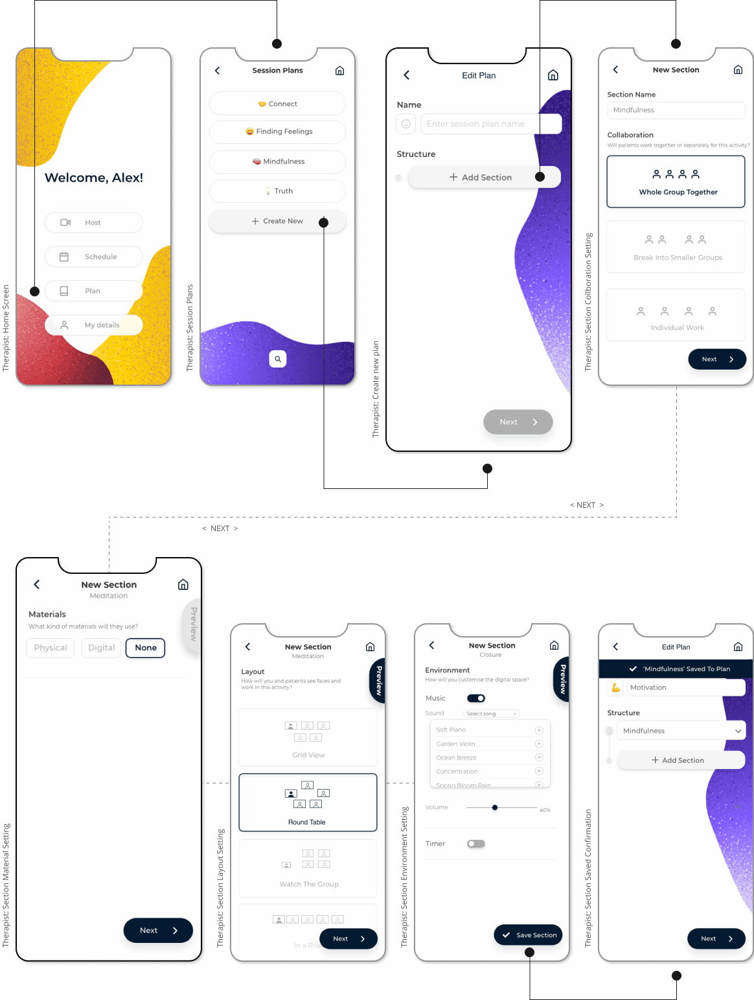
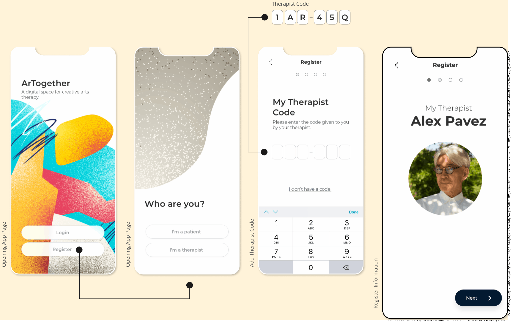

ArTogether
Period
March - June 2020
Team Project
Number of members: 5
My Role
User Research | Interaction | Visual design | XD Prototyping | Testing
Overview
The challenge of facilitating creative arts therapy online has recently become more prevalent with the Covid-19 pandemic forcing many therapists and patients to resort to online video conferencing to continue their practise. ARTogether takes this challenge as a unique opportunity to explore the potential of novel and empathetic interactive system design as a solution to this problem, both in times where social distancing is required and for long term application in general remote therapy.
Design Process
Empathize
Interviews
To gain insight into users needs and issues, eight semi-structured exploratory interviews across 5 creative arts threapist were conducted on zoom.
Interviewees
Key Findings
- Limitations of digital therapy in creating strong interpersonal relationships not only between the therapist and patient but also patient to patient during group sessions.
- Issues in materiality and physicality alongside space restrictions of holding therapy sessions digitally.
- Requirements for structure, but also being able to cater to and change sessions as necessary before and during is also prevalent as the therapy practice is explained consistently to center around the requirements and reactions of the patient.
Define
Rich Picture
To help us identify the complexity of our entire problem statement, a rich picture was created based on insights we gain through the interviewing process.
Ideate
Exploring solutions
The previous processes made it evident that there are many issues we can address surrounding digital art therapy which we could address with our design. Thus we decided to brainstorm ideas by each of us coming up with a design solution which addressed the problem in different ways.
Through collective critiquing of all design ideas, the concluded direction for the next stage of development will focus on the facilitation of therapy sessions. Instead of selecting and expanding off of one member’s idea, design features in the three ideas revolving session facilitation – ‘Mood Room’, ‘Up Up and Away’, and ‘Digital Therapy Space’ – will be amalgamated. The combined prototype will include features of patient mood visualisation, pre-session planning for the therapist, and overall separate views for the therapist and patient inside and outside sessions. Pre-session planning for the therapist will have an intuitive interface based upon a session timeline and settings that will then be translated into automated inclusions (i.e. music, background, visuals, layouts) and smooth transitions between the activities during a session.
User Journey Flow
We created a user experience flow diagram to helps us understand the whole user journey for our design idea.
Therapist User Flow
Patient User Flow
Mid-Fidelity Wireframes
We had a list of screens to cover identified in the user journey flow so we decided to create a mid-fidelity prototype to test the idea and flow first before creating the final designed prototype. This also allowed us to fix users interface and user experince issues before finalising design.
Prototyping
High-Fidelity Mockups
View, Schedule & Edit Session
Therapists can view and create new sessions here. The dates, paitent and session plan can be customised with each schedule.
Send & Respond RSVP
Therapists can send a customised RSVP to confirm attendance and available materials from each patient. Patients can then respond to the RSVP sent by their therapist, by opening the emailed link on their mobile, or from within the app.
Session Planning
Therapists can view and create new sessions here. The dates, paitent and session plan can be customised with each schedule.
Register
Paitents can register by adding the personalised therapist code sent to them by their therapist
Join Live Session
Therapists can host a session by going to the hosting link on their desktop device and typing in a unique code. This will set up the connection between the desktop and t he mobile. Once patients join, therapists are able to see how they are feeling if the mood checker is enabled and begin when ready
Patients can join the session similarly from the app, by visiting a link and typing in a code. Depending on what has been configured prior, patients can enter their mood to share with the whole group or just their therapist.
Live Session remote
Once the session has begun, therapists are able to change the collaboration style, layout, environment and even materials on the fly, just as in the pre-session planning.

Digital Material
On the patient side, they are able to interact with Digital materials through their
mobile device if and when they are enabled. The following digital materials are shown
from the patient’s perspective but therapists can press the “join activity” button
to interact with materials too.
Test
User testing
Participants
Usability evaluation of the main prototype was carried out with two user groups:
5 creative arts therapists and 2 therapy patients. The therapist group consisted
of practising creative arts therapists across disciplines of drama, dance, music
and visual art. For the patient group, there was a difficulty in sourcing genuine creative
arts therapy patients due to the niche and private nature of these target users.
Despite this, we endeavoured to source some representatives using creative convenience
sampling, thus we recruitment of two participants currently attending remote talk
therapy with interest and knowledge of creative arts therapy, despite having
not participated directly.
Method
Due to persisting global circumstances, tests were conducted remotely via Zoom.
Participants interacted with an XD prototype through controlling the facilitators shared screen.
Limitations of this method, specifically that the interaction mode was with mouse on desktop not
touch screen on mobile as intended, is noted. Despite this, the remote method allowed efficient
evaluation and clear recording of the path participants took in each task despite being restricted
to a remote environment.
Each evaluation was conducted following these steps:
- Introduction and Pretest Arrangements
Including signing of the study consent form and gathering basic profile information of each participant. - Pre-Session Tasks
5 for Therapists, and 4 for Patients. Tasks focused on the pre-session scheduling and planning section of the prototype for both user groups as this aspect of the prototype was feasibly able to be presented in an XD prototype.Task order was randomised to minimise between-task learning that would unfairly represent the task ease. - In-Session Demonstration Video
Participants were shown an animated video of how the scheduling and planning aspect of the prototype would be reflected in a live session. This technique was chosen as it was valuable to gather thoughts on this major component of the design but it was not possible to develop some complex interactive Wizard-of-Oz style prototype of the live session component for remote testing in time. - Post-Test Debrief and System Usability Scale (SUS) Survey
An unstructured interview was conducted at the conclusion of tasks and demonstration video to afford flexibility to the facilitators to follow-up on things that stood out to them most. After this, participants completed a System Usability Scale (SUS) survey.
Results
The average SUS score sits very high at 90 for both participant groups, above 80.3% percentile threshold for an “A grade” (Sauro, 2011). Task averages are similarly at an attractive score of less than 2 on our improvised scale of difficulty, 1 being the easiest and 5 being the most difficult task, suggesting that patient groups found the app broadly usable and pleasant to engage with.
Other findings
- Negligence towards the visibility of system status when scheduling. The design should have given users appropriate feedback within a reasonable time to inform them on the effects of the actions taken.
- Lacked flexibility and efficiency. Our design didnt have many accelerators and shortcuts, may often speed up the interaction process as well as provided flexibility to more seasoned or expert users
Quotes from test
Wow! This is amzaing! Can I mention this at my NYU guest lecture?
I would love to demo this if you are releaisng a demo!
You should really consider selling this!
Can i get you to show this to my colleages?
Reflection and takeaways
Reflection
Ultimately the design came together well but not without hardships. The pandemic meant that as a team we could not attend therapy sessions on our own to gain first-hand experience. It also, as mentioned, made conducting prototype evaluations more complicated and nuanced to organise and prepare. However, these obstacles were overcome because of the amazing teamwork and spirit given by all members of the group. Everyone was willing to put in the time and effort required to make the project a success and supported each other along the way. In the time of Coronavirus, sympathy and understanding were key to the cohesiveness of the group, and these are skills everyone exhibited and in turn made a fruitful project that much more rewarding.
Refectinng on what we have developed, although the concept of ARTogether was created within the creative arts therapy paradox, our design may have, created new possibilities and approaches for facilitating video conferencing, benefiting stakeholders beyond creative arts therapy. By designing for an edge case (in our case, creative arts therapy) this transpires into a scalable solution. Thereby, the new ideas and design solutions we created for this design concept may apply to more themes than the current situation of use and design concept. Thus, it can apply in various other real-world problems and push solutions surrounding remote collaboration and video conferencing technology.
If there was more time
- Fix identified issues and problems
- Do further iterations / testings, to further improve user expernece
- Explore if there is a greater application to our design, beyond create arts threapy
Takeaways
What I have learned from this project?
- Teamwork makes the dream work
Although group work was challenging with the resections caused by COVID-19,
however this hardship lead me to learn the importance of collaboration. In this group
everyone was willing put in the hard work to make this project successful even at times
it was challenging. It was inspiring to see how each person was able to bring to the table,
different perspective of how we can tackle each issue throughout the process. Which I believe
to be the credit of the successful project.
- Importance of user reaseach
The research and especially the interviews really help us grab a better understanding of what we
are designing and expanded our knowledge around creative arts therapy. Which help us solve real
problems and not assumptions.
- Big challenges require small steps
I realised through this project that big challenges, cannot be solved instantly and the best way
to tackle them is to take small steps. Tackling small challenges within
the big challenges one by one.
Although group work was challenging with the resections caused by COVID-19, however this hardship lead me to learn the importance of collaboration. In this group everyone was willing put in the hard work to make this project successful even at times it was challenging. It was inspiring to see how each person was able to bring to the table, different perspective of how we can tackle each issue throughout the process. Which I believe to be the credit of the successful project.
The research and especially the interviews really help us grab a better understanding of what we are designing and expanded our knowledge around creative arts therapy. Which help us solve real problems and not assumptions.
I realised through this project that big challenges, cannot be solved instantly and the best way to tackle them is to take small steps. Tackling small challenges within the big challenges one by one.